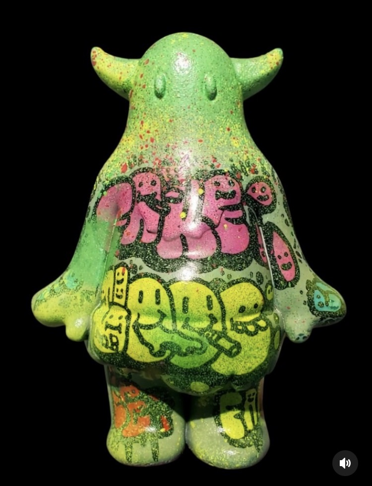

THE BUILDER
3D FABRICATOR / CREATURE SUPPLIER
KNOWN PATTERN
蛍光色、反復する有機的フォルム、意味不明な記号の混在
OBSERVED AREA
OKINAWA / JP — 行動範囲は局所的
BEHAVIOR
深夜の反復的造形行動。完成まで外部との接触を断つ傾向
STATUS
▸ ACTIVE — 現在も個体を発生中

THE CARVER
TATTOO ARTIST / SKIN OPERATOR
KNOWN PATTERN
皮膚への永続的な痕跡記録。線の反復と密度による意味の構築
OBSERVED AREA
OKINAWA / JP — 対象者の身体に直接アクセス
BEHAVIOR
施術中は極度の集中状態。終了後に急激な弛緩が観察される
STATUS
▸ ACTIVE — 痕跡の供給継続中
THE PIERCER
BODY PIERCING / PHYSICAL MODIFIER
KNOWN PATTERN
身体への異物挿入による恒久的改変。精密な位置選定の傾向
OBSERVED AREA
OKINAWA / JP — 施術室内での行動が中心
BEHAVIOR
施術前の長時間にわたる対象者との対話が確認されている
STATUS
▸ ACTIVE — 改変行為継続中
[ REDACTED ]
UNKNOWN
IDENTITY UNCONFIRMED
STATUS
// UNDER INVESTIGATION